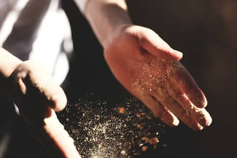

こだわり
- ホーム
- こだわり
頑固おやじは、こだわっている。うまいドーナツを作ることに、こだわっている。
なぜ、そこまでこだわるのか。それは本人も言葉ではうまく表現できないようだけれど、根底にあるのは、自分が「うまい！」と思えるドーナツを作りたい。ただ、その一心なのかもしれない。

だから、ひとから「頑固おやじ」と呼ばれることも、厭（いと）わない。本人はそれを、どこか誇りにさえ思っているふしがある。
調理場で背中越しに聞いた、「結構なことじゃないか」という言葉は、すべてを物語っている。誰かに揶揄されようと構うことはない。食材へのこだわり、調理法へのこだわり、どんなことに対しても細微にこだわって作りあげる。それは職人にとっては当たり前のことなのだ。
ドーナツは、彼の人生そのものだ。すべては、ドーナツのためにある。
明日も変わらず、頑固おやじは、うまいドーナツを作り続けるだろう。そして、これまでそうだったように、たくさんの人の笑顔も作り続けてくれるに違いない。そんな父を、わたしは誇らしく思う。
文：頑固おやじの娘